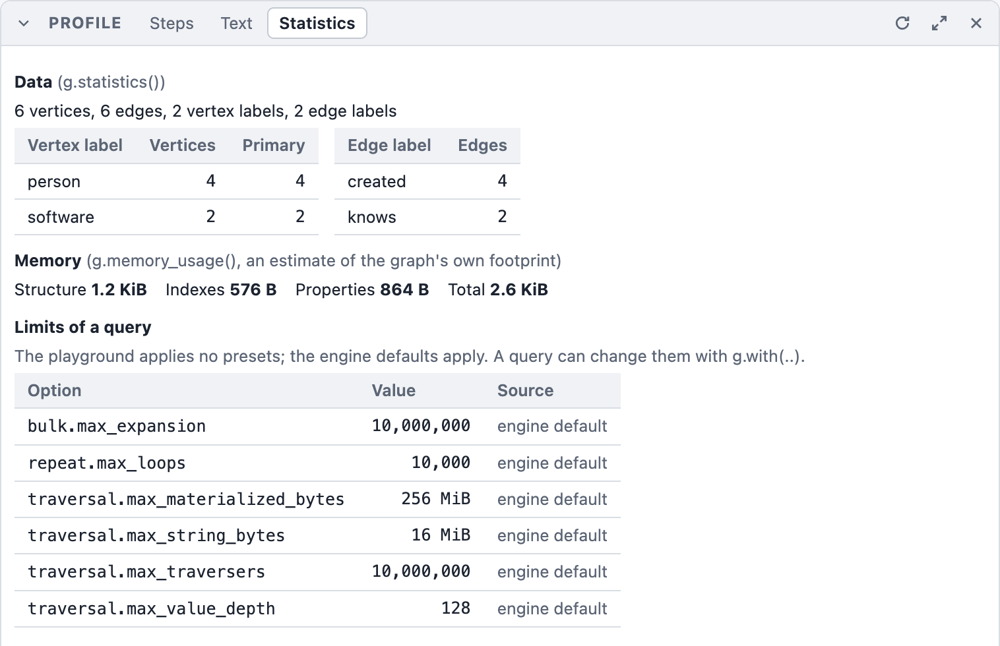
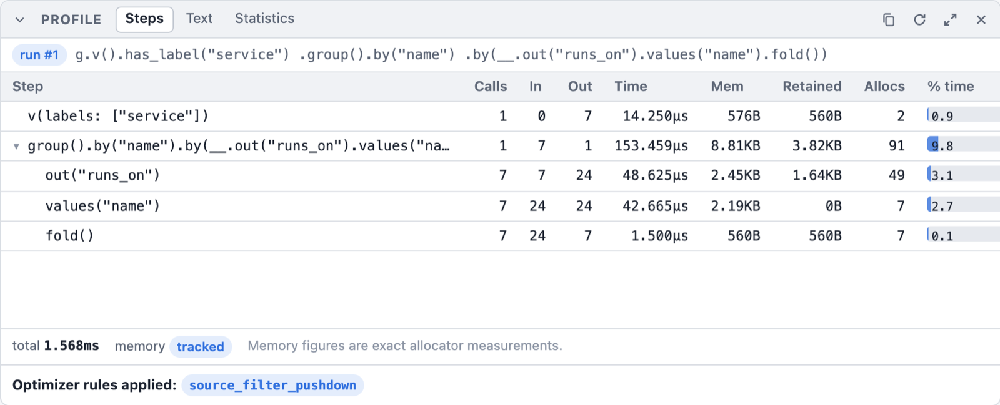

Memory Inspection and Memory-Aware Profiling
The structured result of profile() and the execute() terminal are described in
Profiling and execute(); this page covers the memory figures.
Graphersal has two related tools for answering "how much memory is this using": an on-demand
snapshot of a graph's own footprint, and a per-step memory figure inside .profile().
graph.memory_usage()
g.memory_usage()
Returns a map with structure_bytes, index_bytes, property_bytes, total_bytes, and
total_mb — an on-demand, opt-in-by-call snapshot of the graph's own vertex/edge storage, its
label/ID indexes, and its property store. It is entirely separate from traversal execution: it
never touches a running query and cannot regress query performance.
With compression rules it also reports compressed_values (strings
kept compressed), compressed_plain_bytes and compressed_stored_bytes (their plain and stored
sizes) and compression_dictionary_bytes (the rules' dictionaries, each shared one once; part of
total_bytes). property_bytes counts the stored, compressed size, so a rule's saving shows there
directly. All four are 0 without rules.
With property indexes it reports property_index_bytes, an estimate of
their entries (part of total_bytes; 0 without indexes).
All figures are estimates: they sum std::mem::size_of/capacity-based arithmetic over the
structures that back the graph, not a true allocator-level accounting. Every hash map (an
element's property map, a nested object, the ID and label indexes) counts both of its allocations:
the entries (per slot a cached hash, the key and the value; 64 bytes for a property on a 64-bit
target) and the hash index (a pointer-sized slot and a control byte per bucket, at most 7/8 full).
A vertex with five small properties thus costs about 106 bytes per property, which is what the
allocator reports for it. Allocator rounding and bookkeeping are not counted. Two caveats worth
knowing:
structure_bytescan be a loose bound on a heavily churned graph. The underlying storage never releases a removed vertex/edge's slot immediately (it keeps the slot to preserve other indices' stability), so a graph that has added and removed many elements can retain more memory than its current live element count would suggest.structure_bytesaccounts for this using the storage's actual retained capacity, not just the live count, but no operation today reclaims that space (shrink_to_fit()only compacts the index, not the underlying graph storage).property_bytesis an O(n) walk. It visits every vertex, every edge, and every property, so its cost scales with graph size. On a graph of ~110k elements it completes in roughly a millisecond (see the crate's benchmarks for a current number) — fine for interactive use, not something to call in a hot loop.
memory_usage() is reachable through the GraphStorage trait, so any storage backend plugged into
a GraphTraversalSource gets it uniformly — not just TraversalGraph. A backend that doesn't
support introspection returns None.
Graph statistics
g.statistics()
Returns the element counts the graph keeps up to date as it changes: vertex_count,
edge_count, and three label maps:
| Key | Counts |
|---|---|
vertex_labels | vertices carrying a label anywhere in their label set (a multi-label vertex counts under every label, like has_label) |
primary_vertex_labels | vertices whose primary (first) label it is, what label() returns; every labeled vertex counts once |
edge_labels | edges per label |
$ graphersal -e 'g.statistics()'
"edge_count": 6
"edge_labels": #{"created": 4, "knows": 2}
"primary_vertex_labels": #{"person": 4, "software": 2}
"vertex_count": 6
"vertex_labels": #{"person": 4, "software": 2}
In Rust, GraphStorage::statistics() (and GraphTraversalSource::statistics()) returns
Option<&GraphStatistics>, with getters such as vertex_label_count(label) and
primary_vertex_label_counts(). Unlike memory_usage() this costs nothing to read: the counts are
maintained incrementally by every mutation (O(labels involved), no allocation except for a label
seen for the first time) and restored exactly by a rollback. A storage backend that keeps no
statistics returns None; GraphStatistics::from_storage(&storage) computes them with one scan,
and a backend that does report statistics must report exactly that. The optimizer reads label
counts only through this method (Group Count Pushdown) and
scans when it gets None.
The statistics are the place for everything the engine knows about the data. Planned
extensions: degree statistics, property statistics (counts, distinct values), histograms, and
persisted statistics stamped with the commit sequence they describe. Everything kept today is
recomputable from the data, so nothing is persisted: loading a graph (GraphML, a change-set
replay) rebuilds the statistics. A serialized form (behind the serde feature) will come with
the first statistic that cannot be derived cheaply on load.
In the playground the same counts, the memory footprint and the limits a query runs under are the Statistics tab of the Profile panel:

.profile_with(ProfileType::Memory)'s Mem/Retained/Allocs columns
A bare .profile() (no argument) collects no memory data: it renders the plain
Step | Call | In | Out | Time | % Dur table, at no extra measurement cost. Memory collection and
its columns are opt-in through the ProfileType bitmask: .profile_with(ProfileType::Memory)
(Rust) or g.profile(ProfileType::Memory) / g.profile(ProfileType.Memory) (Rhai, both token
forms). .profile() is .profile_with(ProfileType::none()).
g.v().group().by(T.label).profile(ProfileType::Memory)
In the playground, tick Memory next to Profile in the Query toolbar: the Steps tab gets
the Mem, Retained and Allocs columns (shown here on the dev server, whose timings are native;
the browser rounds its timer to 0.1 ms):

Traversal Metrics
Step Call In Out Time Mem Retained Allocs % Dur
===============================================================================================================================
v() 1 0 6 13.208µs 480B 480B 1 6.30
group().by(T.label) 1 6 1 50.042µs 1.37KB 588B 7 23.87
TOTAL: execute: 209.625µs 30.17
TOTAL: memory materialized: 1.84KB
TOTAL: net retained: 1.04KB
===============================================================================================================================
(real output, captured via graphersal.) Compare with a bare .profile() on the same query — no Mem/
Retained/Allocs columns, no TOTAL: memory materialized:/TOTAL: net retained: rows:
Traversal Metrics
Step Call In Out Time % Dur
=====================================================================================================
v() 1 0 6 1.750µs 5.01
group().by(T.label) 1 6 1 7.041µs 20.14
TOTAL: execute: 34.958µs 25.15
=====================================================================================================
Every step in a memory-profiled traversal reports bytes_materialized: how much heap data that
step newly owns, beyond the lazy handles it passes through. Most steps (filters, has_label,
out()/in()/both(), values() before a terminal materializes them, ...) never own new heap
data at all — they carry lazy vertex/edge handles — so they report 0 at no measurement cost.
Steps that build something new (group(), fold(), sum(), mean(), median(), path(),
element_map()) report their aggregation/materialization buffer's size in the Mem column, next
to Retained (net bytes kept) and Allocs (allocator call count) — see the next section for how
to read all three together.
A ~ prefix on a Mem figure means it is estimated; a plain number means it is tracked
(exact). Which one you get depends on how the binary was built — see below. As data, the figures
are the optional memory section of every step's Metrics
(MemoryMetrics: bytes_materialized, bytes_retained, alloc_count, source); a
Retained/Allocs value of - means that figure simply isn't tracked for this run
(source: "estimated", which has no allocator-level figures to show).
No memory section vs. Estimated vs. Tracked
- No
memorysection (a bare.profile(), noProfileTypeargument): memory profiling wasn't asked for. No allocator thread-local is read, no estimate is computed — the executor skips the work entirely, not just its display. Every step'smemoryis absent (Nonein Rust, no key in the Rhai map and the JSON): "never measured," not "measured and found zero." Estimated(.profile_with(ProfileType::Memory)without thealloc-trackingfeature): asize_of/capacity-based estimate over the data the step already built, computed inside.profile_with()'s timing-collection gate. Expect roughly 10-30% divergence from true bytes for structures dominated by many small, separately-heap-allocated values, and it cannot see temporary allocation churn (memory allocated and freed again within a single step's own execution).Tracked(.profile_with(ProfileType::Memory)withalloc-tracking): a real allocator-level measurement, via thealloc-trackingfeature'sTrackingAllocator. This requires two things: the feature compiled in, and the binary installingTrackingAllocatoras its own#[global_allocator](a library crate cannot do this for you — the attribute can only be set once, by the final binary). The CLI (graphersal), the web playground's WebAssembly module (graphersal-wasm) and the Python extension (py-graphersal, acdylibthat installs it for its own Rust heap; Python objects are not counted) all do this by default.
The trade alloc-tracking makes: once a binary installs TrackingAllocator, every
allocation in that process pays a small, constant bookkeeping cost (a thread-local counter
increment), whether or not the query in flight is profiled. This is the accepted cost in the graphersal command
line, the web playground and the Python extension, for always-exact numbers in the reference
binaries this project ships; the graphersal library without the feature, and any other consumer
that doesn't opt in, stay exactly zero-cost. ProfileType::Memory gates a further, finer-grained cost on top of that: even in an
alloc-tracking build, a query profiled without ProfileType::Memory (or not profiled at all)
skips AllocSnapshot::capture/step_memory_metrics completely for every step.
The Bulk column
When equal traversers were merged (barrier(), the repeat() frontier, the optimizer's
lazy_barrier()), .profile() shows a Bulk column after Out. Out counts traverser objects
(TinkerPop's "Traversers"); Bulk is the sum of their bulks, i.e. how many logical traversers the
step's output stands for (TinkerPop's "Count"). A lazy_barrier() row that reads In 8049, Out 562, Bulk 8049 merged 8049 traversers into 562 without losing any. A query where nothing merged has no
Bulk column at all.
Gross vs. net: reading Mem alongside Retained/Allocs
Under Tracked, a step whose Mem figure looks alarmingly large is not automatically a bug. The
Mem column (bytes_materialized) is gross allocation traffic: it sums every byte the step
ever asked the allocator for during its execution, including a buffer that was grown by
reallocation and then partly (or wholly) freed again before the step finished. It answers "how much
allocator work did this cost," not "how much memory does this step's output now occupy."
For that second question, a Tracked step's row also carries real Retained/Allocs columns:
Step Call In Out Time Mem Retained Allocs % Dur
===============================================================================================================================
v(labels: ["company"]) 1 0 88000 29.126ms 11.25MB 10.00MB 33 12.62
in() 1 88000 747988 136.318ms 80.00MB 70.00MB 19 59.04
has_label("country") 1 747988 88000 65.371ms 80B -80.00MB 1 28.31
count() 1 88000 1 375ns 0B 0B 0 0.00
(real figures from a 110k-element dataset, .profile_with(ProfileType::Memory): in() has a
large fan-out, each input vertex expanding to 8-9 output vertices on average, written into one
amortized-growth output buffer. has_label("country")'s -80.00MB Retained is a genuine
negative delta: it drops in()'s large intermediate output as it filters, so it frees far more
than it allocates.)
Retainedis the net figure: live bytes at the step's exit minus live bytes at its entry. It isMemoryMetrics::bytes_retained, and it can be smaller thanMem(gross) whenever the step freed more than it kept (the reallocation churn described below), and it can even be negative — a step that frees more than it allocates (for instance, one that drops a large intermediate the previous step built) genuinely shows a negative delta, and this is reported honestly rather than clamped to0, ashas_label("country")'s-80.00MBabove shows. Forin(), gross (80.00MB) is only modestly larger than retained (70.00MB): about 10MB of that 80MB was allocated and freed again within the step's own execution (the shared output buffer's amortized-doubling growth), not memory the step's output still holds by the time it hands off to the next step — a tightMem/Retainedgap like this, together with a lowAllocscount relative to output size, is the signature of a step writing into one reused buffer rather than allocating per item.AllocsisMemoryMetrics::alloc_count: the number of distinct calls the step made to the allocator (alloc/alloc_zeroed, plus anyreallocthat grew a buffer). A step that does a handful of large, deliberate allocations (reserve()d once, filled once, or grown by a shared buffer's own amortized doubling — 19 allocations for 747,988 output items above) has a lowAllocsrelative to its output size — efficient and expected. A step whoseAllocscount runs into the hundreds of thousands for tens of thousands of output items is very likely allocating per-item or per-small-batch, which is exactly the structural symptom a largeMem/Retainedgap usually traces back to.
Together, Retained and Allocs turn "this step's Mem figure looks huge" into a diagnosable
statement: high Mem, low Retained, high Allocs reads as "high churn, low net retention" —
a step reallocating a growing buffer many times over — rather than a flat, unexplained number.
Both columns read - under Estimated (the size_of-based path has no allocator to draw them
from), and neither column exists at all — not even as - — under a bare .profile(), since the
Mem column itself isn't rendered without ProfileType::Memory.
This is a lightweight, always-available, in-process diagnostic, not a replacement for external
profiling tools. It tells you that a step is churning and roughly how much, at the whole-step
granularity; it does not attribute any individual allocation to a call site (e.g. "this came from
Vec::push at line 107"), and it has no peak/high-water-mark figure (the maximum live bytes at any
point during a step, as opposed to just at its entry and exit). For that level of detail, reach
for valgrind --tool=massif, heaptrack, or a sampling allocator profiler — this feature exists so
you rarely need to reach for those tools for a first-pass diagnosis, not so you never do.
Summary
| Scope | Cost when unused | Accuracy | |
|---|---|---|---|
graph.memory_usage() | The whole graph's storage | N/A — never runs on the query path | Estimate (capacity-based) |
A bare .profile() (no memory section) | One query's steps, timing only | Zero — no memory collection at all | N/A — no memory data |
.profile_with(ProfileType::Memory), Estimated | One query's steps | Zero when ProfileType::Memory isn't requested | Estimate, ~10-30% divergence possible |
.profile_with(ProfileType::Memory), Tracked | One query's steps | A small, constant, always-on cost per allocation once alloc-tracking is installed, plus the per-call cost of requesting ProfileType::Memory | Exact (Mem, gross); Retained/Allocs add net and churn figures |